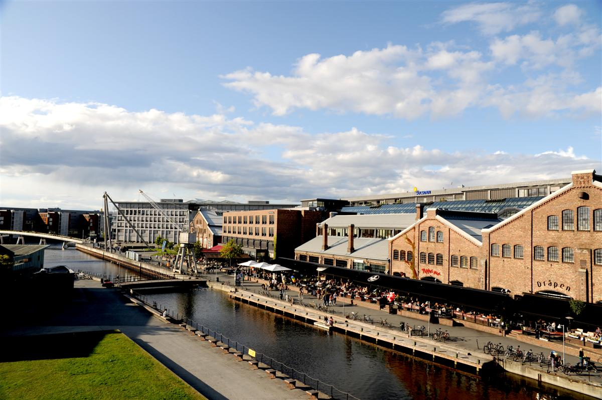

Solsiden

Solsiden Senter i Nedre Elvehavn i Trondheim er en populær møteplass som ligger i tiltalende omgivelser ved Nidelvens utløp og blir på folkemunne kalt Trondheims svar på Aker brygge. Bygningene er et gammelt skipsverft i vakker murstein kombinert med mye glass. Området er også i sterk utvikling med nye boliger, butikker, restauranter, hoteller, museum og ikke minst mange kontorer som medfører høy dagpendling til området.
Solsiden kjøpesenter består av 60 butikker. Senteret har en bred butikkmix med alt fra SPA - senter til post, vinmonopol og apotek, klær, sko, blomster og dagligvarer. Utenfor senteret ligger 20 restauranter, båtplasser, flere konsertscener og hoteller.
Senteret ligger sentrumsnært med både buss, taxi, tog og flybuss like utenfor døren. Hver uke besøkes senteret av nærmere 70 000 kunder.
Solsiden Kjøpesenter legger stor vekt på god atmosfære og trivsel -og er et senter for hele familien med fokus på alt fra inneliv -uteliv til kulturliv.